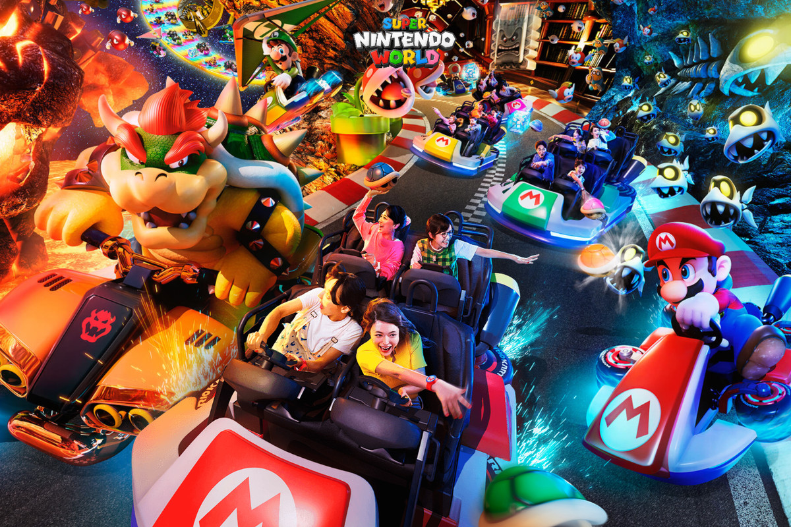
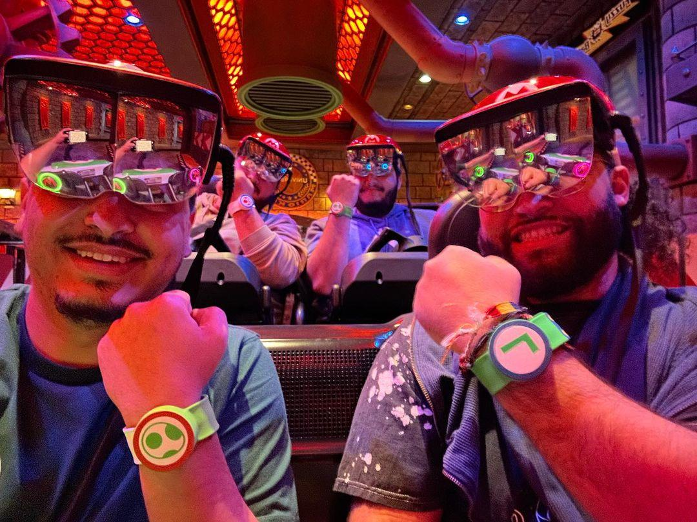
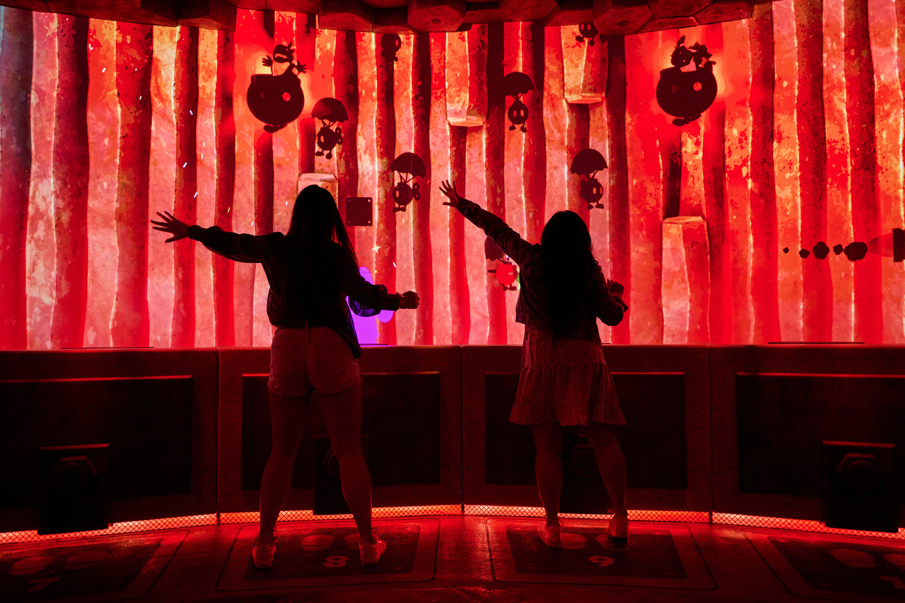
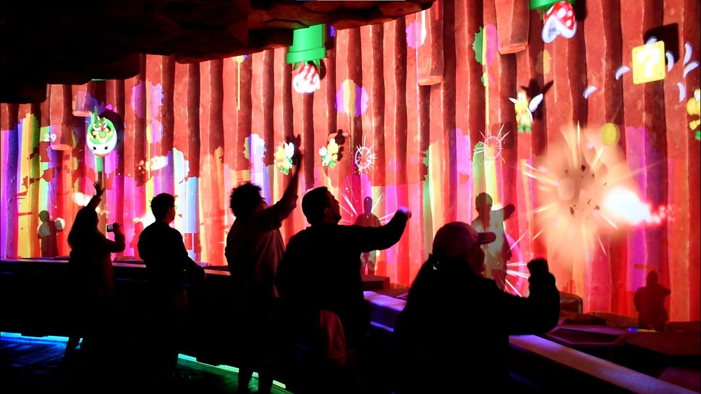
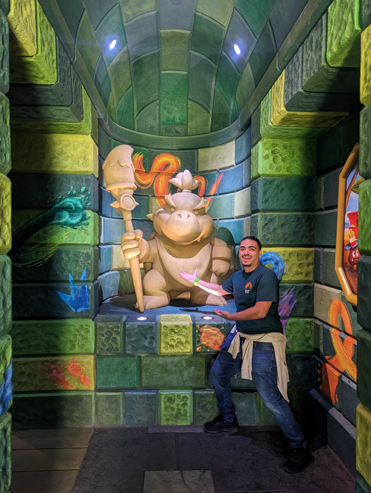

Super Nintendo World at Universal Studios Osaka, Japan, is an immersive marvel that brings the charm of Nintendo's beloved characters to life like never before. Stepping into this extraordinary theme park land is akin to entering a real-life video game world. It stands as the first-ever dedicated space for Nintendo characters, offering an array of interactive activities such as punch blocks, music blocks, and hidden Easter eggs that captivate visitors at every turn. But the true highlight lies in the full-scale, real-life Mario Kart experience, relaxing Yoshi adventure, and captivating land-wide interactive challenges, making Super Nintendo World a groundbreaking destination that takes interactivity to an unprecedented level in theme park entertainment.
The Power Up Bands in Super Nintendo World are a game-changer, quite literally! These bands take your experience to a whole new level by serving as the vital link between all the interactive activities in the land. When you connect your Power Up Band to the Super Nintendo World app, a world of possibilities opens up. You can track your coins, check out leaderboards to see how you stack up against other visitors, keep track of key challenges, collect stamps to unlock exciting surprises, and much more! What's even cooler is that these bands are linked to teams based on fan-favorite characters, adding a sense of camaraderie and competition to your Nintendo-themed adventure.
My personal experience with the Power Up Bands at Super Nintendo World has been an absolute blast! I've found myself immersed for hours, collecting stamps and eagerly climbing the leaderboards. What makes it even more enjoyable is the friendly competition that brews among my friends when we visit together, as we've all chosen different teams. It's a thrilling race to see which team can amass the highest collective coin count by the end of each hour, with bonus coins awaiting the victors. The anticipation of the next hour rolling over adds an extra layer of excitement to our adventures. What's truly fantastic is that your progress carries over for your next trip, allowing you to pick up where you left off, and you can also keep tabs on your friends' progress, making it a shared and continuous gaming experience that keeps us coming back for more fun!
Mario Kart Bowsers Challenge

Mario Kart Bowsers Challenge
Prepare for an exhilarating ride like no other at Super Nintendo World's "Mario Kart: Bowser's Challenge." It's an innovative interactive dark ride that pits you against Team Bowser in a race like never before. What makes this attraction truly groundbreaking is that it's the first theme park experience to introduce AR headsets into the mix. Equipped with a steering wheel, you'll navigate your way through the course, drifting and skillfully launching shells at Team Bowser, all made possible through the in-house headset developed exclusively for this ride. Your mission is clear: score 100 points to claim victory and win the Universal Cup! And to add to the excitement, the Power Up Band integration further enhances your Mario Kart adventure, creating an immersive and unforgettable experience that brings the iconic game to life in a whole new way.

Mario Kart Bowsers Challenge - Riding with Family and Friends
Super Nintendo Worlds narrative centers around the tale of the coveted golden mushroom, which has been pilfered by the mischievous Bowser Jr. Retrieving it involves embarking on a quest that requires three essential keys, each representing a unique challenge within the land. Each of the five Key challenges will test a visitors wit and skills to collect the necessary keys to confront Bowser Jr.
I played a pivotal role in bringing the Key Challenges to life at Super Nintendo World through my dedicated efforts. As a driving force behind these experiences, I took charge of creating the prototypes for most of these challenges. My work spanned a wide spectrum, ranging from crafting touch screen Unity prototypes to designing physical controllers, and even developing networked multiplayer prototypes that seamlessly connected mobile clients to a PC server. This comprehensive approach allowed us to explore diverse interactive possibilities and ensure a seamless visitor experience. In addition to prototype creation, I conducted extensive playtesting and iterative processes, fine-tuning and enhancing these challenges to perfection. My commitment to refining the Key Challenges contributed significantly to the immersive and engaging experience that Super Nintendo World offers to its visitors.
Key Challenges Video Tour
Bowser Jr: Shadow Showdown
"Bowser Jr. Shadow Showdown" at Super Nintendo World is an electrifying, multisensory experience that truly comes to life when adventurers successfully unlock it with the acquisition of three challenge keys. In this thrilling encounter, up to 12 players engage in a frenetic battle against the mischievous Bowser Jr. The action is non-stop as players swat away bob-ombs, jump and duck to evade menacing bullet bills, and unleash their inner fireball flinging prowess. What makes this experience truly exceptional is the incorporation of cutting-edge technology. Leveraging computer vision and skeletal tracking, the attraction projects a perfect shadow of each player, immersing them entirely into the heart-pounding showdown with Bowser Jr. It's an incredible fusion of gameplay and technology, delivering an unforgettable and fully immersive encounter.
Bowser Jr Shadow Showdown Overview Video
From Beginning to End
One of my most significant contributions at Super Nintendo World was my involvement in the development of a game design tool, specifically for the "Bowser Jr. Shadow Showdown" experience. In collaboration with UI/UX designer Melinda Ng, we set out to create a user-friendly and comprehensive design tool to empower the game design team. This innovative tool encompassed all proposed game mechanics, including the skeletal tracking feature. It featured dozens of configurable parameters for every game element, providing a robust platform for customization. What set this tool apart was its ability to save configurations, allowing game designers to efficiently playtest preset settings and record analytics during the process. These recorded analytics provided invaluable data for fine-tuning the experience, aligning it with the player's needs. Furthermore, a timeline tool enabled designers to determine the duration of the experience and precisely when each element would come into play. The user-friendly interface not only streamlined the design process but also encouraged leadership to offer feedback directly within the tool, facilitating effective communication and ensuring the end product met the highest standards of quality and engagement.

Bowser Jr Shadow Showdown - Phase 1 Gameplay
In addition to my pivotal role in developing the design tool, I played a significant part in the actual production of the "Bowser Jr. Shadow Showdown" experience by collaborating closely with the project's contracted vendors. My responsibilities included writing production code and ensuring that the experience was meticulously optimized at every step of the development pipeline. This involved diving into gameplay programming, enhancing the overall experience, and fine-tuning performance for seamless operation. Remarkably, I joined the production phase of the project in its final six months and quickly adapted to the existing codebase and production pipeline, making a substantial contribution to bring the experience to life and ensuring it met the highest standards of quality and performance.

Bowser Jr Shadow Showdown - Phase 2 Gameplay
Balloons!
One of my favorite and most unique contributions to the "Bowser Jr. Shadow Showdown" experience was the creation of the pre-game balloons. Serving as a warm-up for players while team members load guests into the room, this concept was a direct result of a late development recommendation by none other than the legendary Shigeru Miyamoto. At his direction, I designed the balloons to mimic the behavior of a bob-omb. This taught the players the basic mechanic while effectively telegraphing to players that there's no danger involved. The presence of a giant balloon further encourages collaboration among users as they pass it around, setting the tone for collaboration.

My First Time Experiencing Shadow Showdown in Person!
Lessons Learned
1-UP Experience!
Contributing on Super Nintendo World has been an incredible journey, undoubtedly one of my favorite projects and a true highlight in my career. The opportunity to collaborate with Nintendo and their legendary team was a humbling experience, providing invaluable lessons along the way. In this colossal undertaking, I learned the art of jumping in and working effectively with multiple parties, often on short notice. This experience not only helped me grow as a developer but also as a designer, expanding my skill set and versatility. The project's vast scale, involving numerous teams, each with their unique goals, allowed me to master the art of collaboration and communication with other teams and vendors. Ensuring my deliverables met and, in many cases, exceeded expectations has been a rewarding and transformative experience that has left an indelible mark on my career journey.